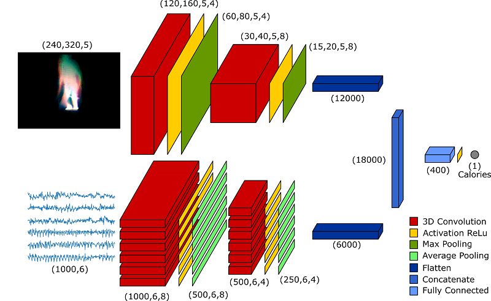
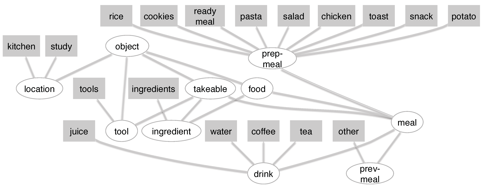

Calorie Expenditure Estimation for Health Monitoring

CaloriNet: From silhouettes to calorie estimation in private environments. A Masullo, T Burghardt, D Damen, S Hannuna, V Ponce-Lopez, M Mirmehdi, BMVC 2018
Energy expenditure estimation using visual and inertial sensors. L Tao, T Burghardt, M Mirmehdi, D Damen, A. Cooper, S. Hannuna, M Camplani, A. Paiement, I Craddock. IET Computer Vision, 12(1), 2018.
What`s cooking and Why? Behaviour Recognition during Unscripted Cooking Tasks

Analysing Cooking Behaviour in Home Settings: Towards Health Monitoring. K Yordanova, S Ludtke, S Whitehouse, F Kruger, A Paiement, M Mirmehdi, I Craddock, T Kirste. Sensors, 19(3), 646, 2019
What is cooking and Why? Behaviour Recognition during Unscripted Cooking Tasks for Health Monitoring. K Yordanova, S Whitehouse, A Paiement, M Mirmehdi, T Kirste, I Craddock. PerCom 2017 (Best work in progress paper award)
Great Ape Detection in Challenging Jungle Camera Trap Footage via Attention-Based Spatial and Temporal Feature Blending, X. Yang, M. Mirmehdi, T. Burghardt, Computer Vision for Wildlife Conservation (CVWC) Workshop at
IEEE International Conference of Computer Vision (ICCVW), October 2019.
Weakly-Supervised Completion Moment Detection using Temporal Attention. F Heidarivincheh, M Mirmehdi, D Damen. ICCV Workshop on Human Behaviour Understanding. Arxiv PDF | CVF PDF, Oct 2019.
Action Completion: A Temporal Model for Moment Detection. F Heidarivincheh, M Mirmehdi, D Damen. British Machine Vision Conference (BMVC), Sep 2018. Arxiv PDF | Video2018 | Dataset
Real-time RGB-D Tracking with Depth Scaling Kernelised Correlation Filters and Occlusion Handling. M Camplani, S Hannuna, M Mirmehdi, D Damen, L Tao, T Burghardt and A Paiment. British Machine Vision Conference (BMVC), Sep 2015.
Online quality assessment of human movement from skeleton data. A Paiment, L Tao, S Hannuna, M Camplani, D Damen and M Mirmehdi. British Machine Vision Conference (BMVC), Sep 2014.
3D Data Acquisition and Registration using Two Opposing Kinects. V Soleimani, M Mirmehdi, D Damen, S Hannuna, M Camplani
4th International Conference on 3D Vision (3DV), 128-137, 2016